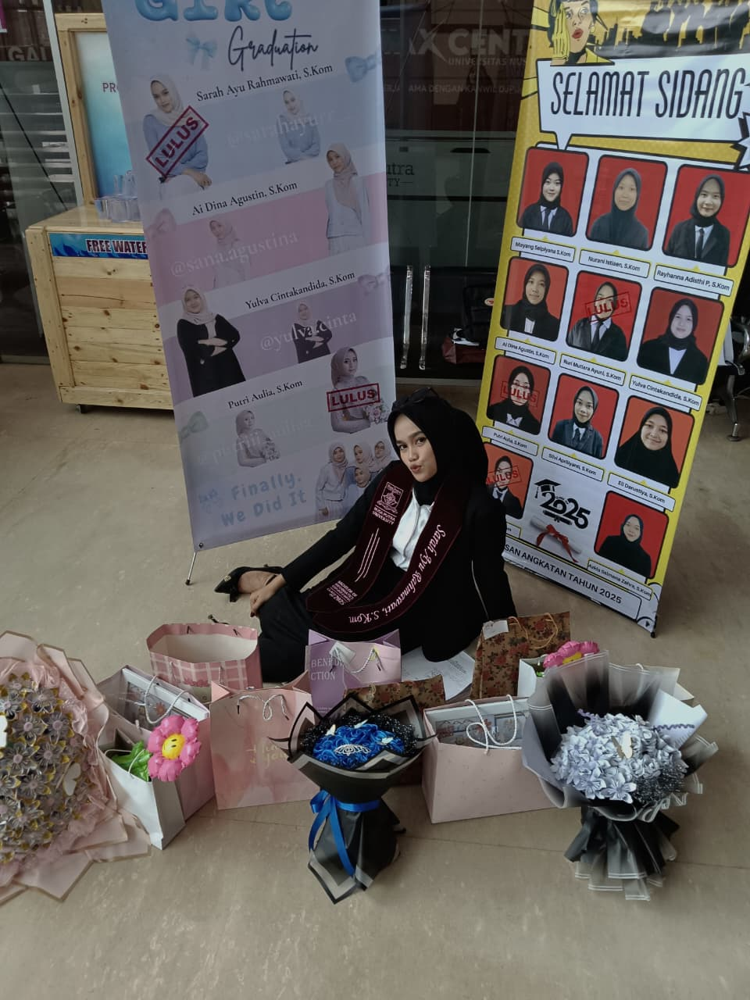
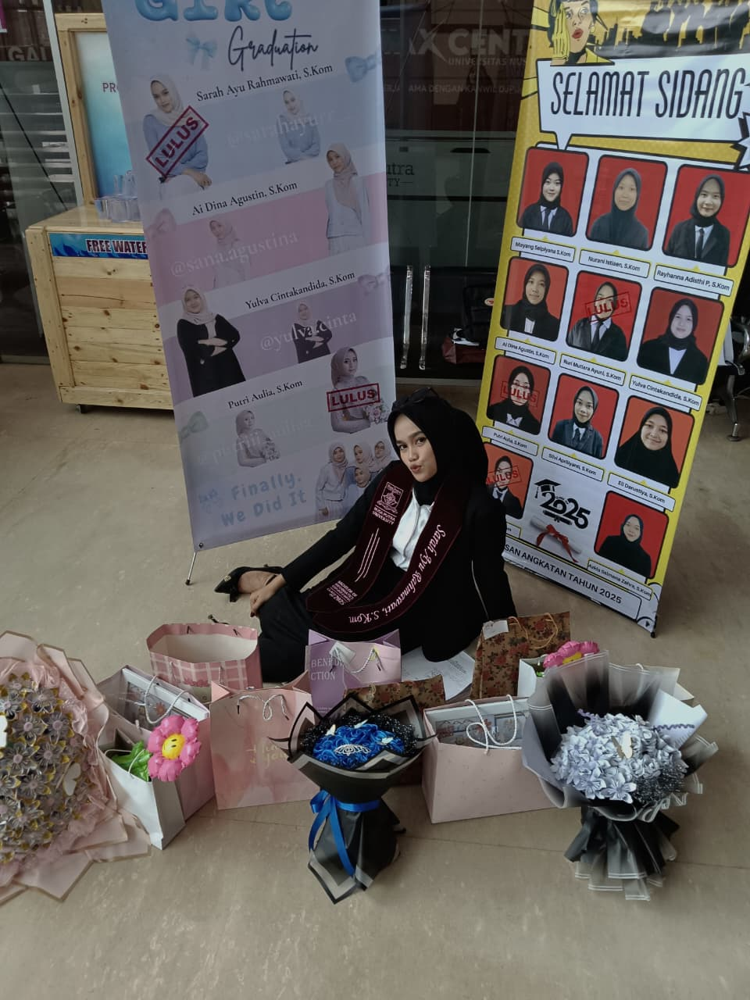

Tentang Saya
Saya adalah lulusan Teknik Informatika Universitas Nusa Putra dengan ketertarikan pada bidang teknologi informasi, pengelolaan data, dan sistem digital. Berpengalaman dalam analisis data, pelayanan pelanggan, serta pengembangan sistem berbasis web. Saya berkomitmen untuk terus belajar, berkembang, dan berkontribusi positif di dunia profesional.
Proyek
📘 Sistem Informasi E-Konseling
Aplikasi berbasis web untuk layanan konseling online dengan fitur penjadwalan otomatis dan notifikasi real-time. Proyek ini menggunakan metode Rapid Application Development (RAD) untuk meningkatkan efisiensi layanan bimbingan mahasiswa.
Tools: Laravel, MySQL, Bootstrap

📊 Analisis Sentimen Ulasan Pelanggan
Proyek analisis data menggunakan metode Naive Bayes Classifier untuk mengukur kepuasan pelanggan dan memprediksi tingkat loyalitas. Analisis ini dikembangkan selama program magang di PT Sanraya Adi Nattaya.
Tools: Python, Google Colab, Excel
Pengalaman
🏦 Bank Rakyat Indonesia (BRI) – Unit Cisande
Oktober 2024 – Desember 2024 | Pengarsipan Dokumen Kredit (Pegawai Magang)
- Mengelola data nasabah dan mengunggah dokumen ke sistem BRIMEN.
- Menata arsip digital dan fisik agar mudah diakses oleh bagian administrasi.
- Menjamin keamanan data dan kepatuhan terhadap kebijakan privasi perusahaan.
🏢 PT Sanraya Adi Nattaya – Customer Success Intern
Maret 2024 – September 2024
- Menganalisis ulasan pelanggan untuk peningkatan kualitas layanan.
- Menangani komunikasi pelanggan dan mengelola data transaksi.
Kegiatan Selama Kuliah
💃 Penari Kampus & Acara Budaya
Berpartisipasi dalam berbagai acara kampus seperti pentas seni, festival budaya, dan acara wisuda.
🏸 Tim Badminton Universitas
Menjadi bagian dari tim badminton Universitas Nusa Putra dan mengikuti berbagai kompetisi antar fakultas.
🏐 Tim Voli Fakultas Teknik
Mengikuti kegiatan voli antar jurusan dan menjadi perwakilan dalam event olahraga kampus.
📰 Organisasi & Kepanitiaan
Berperan aktif sebagai bendahara acara Himpunan Mahasiswa, yang bertugas mengatur keluar masuknya uang selama acara berlangsung.
Pelatihan & Sertifikasi
📸 Dokumentasi Pendukung
Beberapa momen dokumentasi selama kuliah dan magang yang mencerminkan semangat belajar, kolaborasi, serta kreativitas saya.
 

Keahlian
Soft Skills
- Komunikasi Efektif
- Problem Solving
- Manajemen Waktu
- Kerja Sama Tim
Hard Skills
- Data Management
- Analisis Data
- Web Development
Kontak
📍 Sukabumi, Jawa Barat